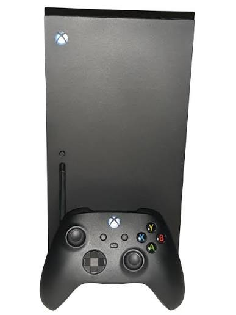

Xbox Series X/S Overview
Xbox Series X and Xbox Series S launched on November 10, 2020. The Series X is built for stronger performance and 4K gaming, while the Series S is smaller, digital-only, and usually better for players who want a more affordable modern Xbox.
Reference: Xbox Wire: Series X/S Launch
Xbox Series X
Xbox Series X is the stronger console. It supports 4K gaming, has a disc drive on the standard model, and is the best choice for players who want higher performance and physical game discs.
Reference: Xbox Series X Official Page
Image credit: Der. Bellemer, CC BY 4.0, via Wikimedia Commons.

Xbox Series S
Xbox Series S is smaller and all-digital. It is a good option for players who mostly download games, use Game Pass, and want a lower-cost way to play current Xbox games.
Reference: Xbox Series S Official Page
Image credit: AsmodeanUnderscore, CC BY-SA, via Wikimedia Commons.